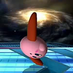

Looks like you found the secret not to secret(gave up on trying to change color).
s.
| Char |
Rank |
.jpg) Shiek Shiek | 1 |
.jpg) ZSS ZSS | 2 |
.jpg) Rosalina Rosalina | 3 |
.jpg) Pikachu Pikachu | 4 |
.jpg) Bayonetta Bayonetta | 5 |
.jpg) Mario Mario | 6 |
.jpg) Cloud Cloud | 7 |
.jpg) Sonic Sonic | 8 |
.jpg) Ness Ness | 9 |
.jpg) Ryu Ryu | 10 |
.jpg) Yoshi Yoshi | 11 |
.jpg) Corrin Corrin | 12 |
.jpg) FALCON PUNCH FALCON PUNCH | 13 |
.jpg) Diddy Diddy | 14 |
.jpg) Fox Fox | 15 |
.jpg) Meta Meta Meta Meta | 16 |
.jpg) Villager Villager | 17 |
.jpg) Link Link | 18 |
.jpg) Luca Luca | 19 |
.jpg) Luigi Luigi | 20 |
| Attack Info |
Damage |
Frame Duration |
Hits |
| Jab Start | 2% | 17/60 | 1 |
| Jab Straight | 2% | 21/60 | 1 |
 Vulcan Jab Vulcan Jab | 1% | Infinite | Infinite |
The neutral attack is activate when you press or hold down the A in game.The attacks go in a 1 2 3 and then last for infinity
leaves the damage range.It is wise to instead of holding the button to continue to press 2-5 times and then hold for maximum damage.
| Attack Info |
Damage |
Frame Duration |
Hits |
| Break Spin/Dash Attack | 2% | 55/60 | 6 |
Kirby's well known dash attack in all instalments of smash.When using this move Kirby spins and damages anything that touches
his helicopter feet with the final attack doing more damage and knockback
| Attack Info |
Damage |
Frame Duration |
Hits |
| Spin Kick | 7-8% | 33/60 | 1 |
The attack where Kirby roundhouse his oppents.The attack can be angled if you hold slightly up or slightly down when activated.
Useful to knock opponents away.
| Attack Info |
Damage |
Frame Duration |
Hits |
| Scoop Kick | 5/7% | 24/60 | 1 |
An attack which launches foes up into the air giving the player time to set up a combo.The attack does more damage if the opponent is close and
not at the toes of Kirby.
| Attack Info |
Damage |
Frame Duration |
Hits |
| Sweep Kick | 6/5% | 20/60 | 1 |
An attack which requires Kirby to crouch.When activated Kirby will sweep the feet of the opponent and cause them to trip
.The trip cause the opponent to stay immobile leaving a chance to be grabbed then comboed.
| Attack Info |
Damage |
Frame Duration |
Hits |
| Jump Kick | 13/15% | 50/60 | 1 |
One of Kirby's many smash attacks.This attack is great if the player is terrible at punishing and can be pulled out pretty fast
However Kirby has a small frame that he is vunerable so don't constantly pull it out.
| Attack Info |
Damage |
Frame Duration |
Hits |
| Flip Kick | 15/12/11% | 50/60 | 1 |
One of Kirby's many smash attacks.A very strong move for launching people in the air to set up a combo or KO them.
The damage depends on where the enemy gets hits so plan carefully and wait.
| Attack Info |
Damage |
Frame Duration |
Hits |
| Propeller Kick | 14/10% | 56/60 | 1 |
One of Kirby's many smash attacks.This attack takes the longest to pull out and is meant to give space between you and the enemy
.Don't let them touch your toes or the attack does less damage.
| Attack Info |
Damage |
Frame Duration |
Hits |
| Neutral B | 0% | Infinite | N/A |
The power Kirby is known for.When he inhales an enemy, he is able to copy their neutral b attack.Have fun Reverse warlock punching ganon
| Attack Info |
Damage |
Frame Duration |
Hits |
| SideBGround | 23% | 60/60 | 1 |
| SideBAir | 15/17% | 50/60 | 2 |
This one is one of kirby copy abillites from a previous game.Kirby will his Bonker's Hammer and proceed to smack a person in the face with it.
The longer you charge it the more damage it does.If you manage to hit the person in the air you land 2 hits leading to more damage.
| Attack Info |
Damage |
Frame Duration |
Hits |
| Final Cutter | 8/2/5% | 87/60 | 3 |
The final cutter copy ability.Kirby uses this move to upper cut into the air and go back down with amazing force and launch a projectile
.This is the perfect move to recover with if Kirby somehow lose his jumps however the duration is extremley long.
| Attack Info |
Damage |
Frame Duration |
Hits |
| Stone-Air | 18% | 58 or 162/60 | 1 |
| Stone-Ground | 14% | 54 or 162/60 | 1 |
The stone copy ability.A random form is chosen and Kirby turns into an immobile stone.He can take upto 40% damage until he is launched out of stone form.
It makes sense if you use this in the air you gain more damage because of velocity or soemthing like dat.
| Attack Info |
Damage |
Frame Duration |
Hits |
| Twinkle Star | 12/6% | 80/60 | 1 |
The cutest attack you will ever see.Kirby spins like a Star and uses his entire body to attack.If you get hit by Kirby's sweet spot the
damage will increase.
| Attack Info |
Damage |
Frame Duration |
Hits |
| Triple Kick | 4/3/5% | 50/60 | 3 |
The easiest combo to pull in the game.Kirby kicks the opponent three times in the air and then launches them offward.Useful to play keep away with the enemy.
The third hit is the strongst.
| Attack Info |
Damage |
Frame Duration |
Hits |
 Drop-Kick Drop-Kick | 12/9% | 44/60 | 1 |
Kirby finally got a licsense to B-Air arms.This attack is hard to pull of but has incredible potential in K.Oing
If the player is able to sent them into the air this is the move you would use.
| Attack Info |
Damage |
Frame Duration |
Hits |
| Sommersault Kick | 10% | 48/60 | 1 |
A juggler called and he wants his attack back.This attack sends the enemy into the air without giving too much knockback.It makes it perfect
for juggling bad characters into the air until you land a kill move.
| Attack Info |
Damage |
Frame Duration |
Hits |
| Screw Drive Kick | 10% | 60/60 | 6 |
THe move that seems to last forever.This attack is to prevent players from ever recovering.If this attack is initated in the air, the enemy will
be sent straight down with a meteor smash.If this is preformed and kirby lands,the enemy is launched to the side.
 Low Punch
Low Punch Medium Kick
Medium Kick Low Kick
Low Kick Medium Punch
Medium Punch Low Kick
Low Kick Medium Punch
Medium Punch